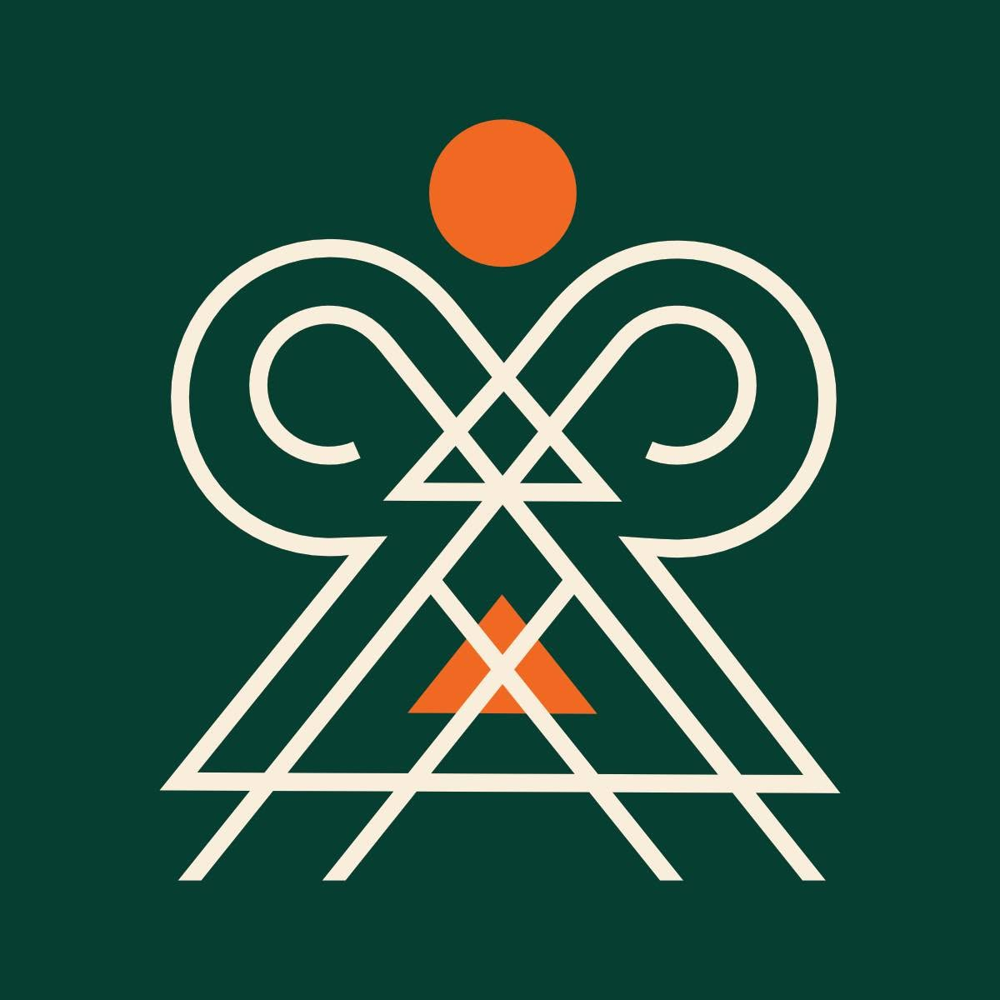

Východná
Miesto konania: Východná
KDE SA STRETNEME
Prehľad pripravovaných vystúpení a kultúrnych podujatí.
Kde nás môžete vidieť

Miesto konania: Východná

Miesto konania: Detva

Miesto konania: Varšava

Miesto konania: Skanzen Pribylina

Miesto konania: Detva